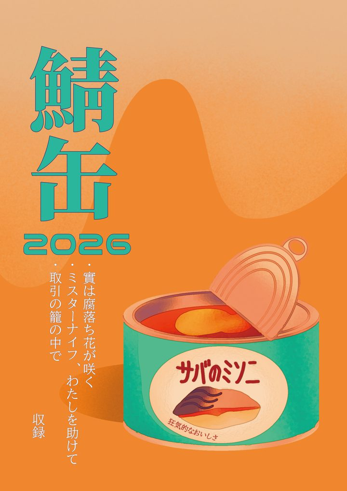

昨日の貴女と明日の君へ
昨日の貴女と明日の君へ
鯖缶
クトゥルフ神話TRPG（第6版）と新クトゥルフ神話TRPG（第7版）のシナリオを3本収めた、TRPG アンソロジーです。
- 頒布
- 新刊 2026年11月14日 TRPGサミット（スペース A29）
- 仕様
- B5・46ページ
- 著
- shiki365・久崎碧斗・伊井丗えびす
収録
取引の籠の中で
shiki365
探索者たちのもとに、一通の封筒が届いた。中に入っていたのは、手紙が一枚と地図が一枚だけ。手紙には、たった一文。『私たちと取引をしませんか？』
- 所要時間
- 約4〜6時間（ボイスセッション）
- ロスト率
- 中（ただの取引じゃないですか）
- 舞台
- 現代日本（2022年・冬）、山奥の屋敷
- 推奨技能
- 〈目星〉〈聞き耳〉〈図書館〉
必須：技能値90％以上の技能を1つ - ハンドアウト
- 共通HO
- 戦闘
- あり （チェイス形式。戦闘技能は無くてよい）
ミスターナイフ、わたしを助けて
久崎碧斗
- ロスト率
- 中
- 舞台
- 現代日本
- 推奨技能
- INTロール、〈説得〉〈言いくるめ〉〈目星〉〈図書館〉〈コンピューター〉
實は腐落ち花が咲く
伊井丗えびす
貴方たちは突然出会い、物語は動き出す。
君たちは何を捨て、何を求めるのか。
- 所要時間
- 約3時間（ボイスセッション）
- ロスト率
- 貴方たち次第。
- 舞台
- 現代日本／蜂萼市
- ハンドアウト
- あり（HO爛熟・HO徒花）
- 推奨技能
- なし